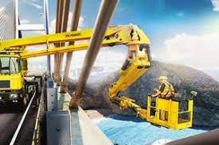

Conheça também os Guindastes para Inspeção de Pontes
Title description, May 19, 2021

E o que fazemos?
A PALFINGER ingressou no mercado brasileiro em 2001, através da aquisição da MADAL, fabricante nacional de guindastes articulados e telescópicos localizada em Caxias do Sul, e desde então, se tornou a plataforma industrial e comercial do grupo para a América do Sul.
A estrutura e processos da PALFINGER no Brasil são espelhados nos mais altos padrões de qualidade praticados na Europa. Auditorias periódicas de entidades locais e da Europa verificam continuamente processos e produto, sempre buscando identificar e implementar oportunidades de melhoria. Sua completa linha de soluções é reconhecida tanto pela sua versatilidade quanto pela qualidade e características técnicas, fortemente respeitadas no ramo em que atuam.
Por seus altos padrões de qualidade e inovação técnica, a PALFINGER é referência no mercado nacional e sul-americano, o que lhe garante a posição de liderança no competitivo mercado de movimentação de cargas.
Em todo o mundo, a PALFINGER representa as soluções de elevação mais inovadoras, confiáveis e econômicas para uso em veículos comerciais e navios. Com o nosso conhecimento tecnológico e equipe qualificada, somos referência em qualidade, tecnologia e inovação nos segmentos em que atuamos. A PALFINGER é a líder mundial na produção de guindastes articulados, guindastes marítimos e equipamentos para movimentação de contêineres. A PALFINGER também lidera o mercado de guindastes florestais e de reciclagem, plataformas elevatórias de carga, empilhadeiras e sistemas ferroviários de alta tecnologia.
Guindastes para Inspeção de Pontes
PRINCIPAIS BENEFÍCIOS: Segurança, baixo custo operacional e agilidade durante as inspeções e manutenções de pontes e estruturas. Um passo a frente em tecnologia e segurança.
PALFINGER É RECONHECIDA ENTRE AS 40 MELHORES INDÚSTRIAS PARA TRABALHAR NO BRASIL.
A fabricante metalúrgica de guindastes carregadores e vários produtos que são as soluções de elevação conquistou o 5º lugar no prêmio regional Great Place to Work (GPTW) — padrão de excelência para a definição dos ambientes de trabalho de destaque.